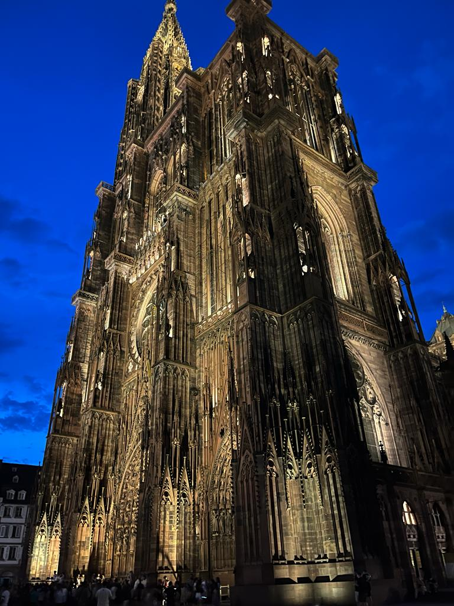

___Cathédrale Notre-Dame de Strasbourg:
Das Straßburger Münster, auch bekannt als Cathédrale Notre-Dame de Strasbourg, ist ein gotisches Meisterwerk in Straßburg, Frankreich.
Der Bau dieses beeindruckenden Wahrzeichens begann im 12. Jahrhundert und dauerte mehrere Jahrhunderte.
Es ist berühmt für seine imposante Fassade, die mit feinen Skulpturen und filigranen Details verziert ist.
Der Turm des Münsters war über zwei Jahrhunderte lang das höchste Gebäude der Welt.
Die Kathedrale beherbergt eine beeindruckende Astronomische Uhr und eine reiche Geschichte, die mit religiösen und kulturellen Ereignissen verbunden ist.
Das Straßburger Münster ist ein architektonisches Juwel, das die Besucher mit seiner Pracht und Geschichte fasziniert und eine der bedeutendsten Sehenswürdigkeiten in Europa darstellt.
___La petite france:
La Petite France in Straßburg ist ein malerisches Viertel, das sich am Ufer des Flusses Ill erstreckt.
Dieser bezaubernde Stadtteil ist für seine historischen Fachwerkhäuser und romantischen Kanäle bekannt.
Die Architektur stammt aus dem 16. Jahrhundert und vermittelt ein Gefühl der Zeitlosigkeit und des alten Elsass.
La Petite France war einst das Viertel der Fischer, Gerber und Mühlenarbeiter und strahlt noch heute den Charme vergangener Zeiten aus.
Besucher können die engen Gassen und gemütlichen Restaurants erkunden, die traditionelle elsässische Küche servieren.
La Petite France ist ein Ort, der eine ruhige Atmosphäre und historische Schönheit verströmt und Straßburg zu einem einzigartigen Reiseziel macht.
___Das Europaparlament
Das Europaparlament in Straßburg ist das symbolische Herz der Europäischen Union und ein Ort der politischen Bedeutung.
Das moderne Gebäudekomplex, offiziell als "Louise-Weiss-Gebäude" bekannt, wurde 1999 eröffnet und ist Sitz des Europäischen Parlaments.
Hier kommen Abgeordnete aus den verschiedenen Mitgliedsstaaten zusammen, um die Zukunft der EU zu gestalten.
Die Architektur des Gebäudes ist zeitgemäß und repräsentiert die Ideen der europäischen Einheit und Transparenz.
Das Europaparlament in Straßburg ist nicht nur ein Ort der politischen Entscheidungsfindung, sondern auch ein Symbol für die Einheit und Vielfalt Europas.
Besucher haben die Möglichkeit, an Führungen und öffentlichen Sitzungen teilzunehmen, um einen Einblick in die europäische Politik zu erhalten.